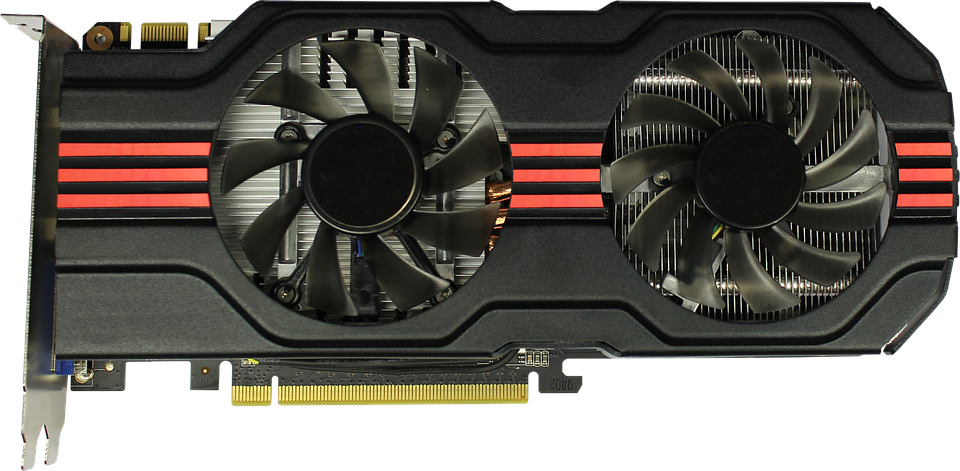

Grafikkortet är en processor som arbetar med grafiska beräkningar och som hanterar grafisk data, som man hör på namnet. Grafikkortet tar alltså hand om data som har med din bild på skärmen att göra. Alla datorer har ett grafikkort. Många processorer har till och med inbyggda grafikkort som kan ta hand om grundläggande grafiska datahanteringar. Men om man vill kunna spelade de bästa spelen måste man ha bättre grafikkort som kan ta hand om de större kraven, och de måste då anpassas därefter.
Ju bättre grafikkort man ska ha ju varmare blir dom. Många av de bättre grafikkorten innehåller redan fläktar men man måste ofta ha ännu bättre kylning. Man behöver då anpassat sitt chassi för den typen av ventilation och det kommer också med sina nackdelar.
